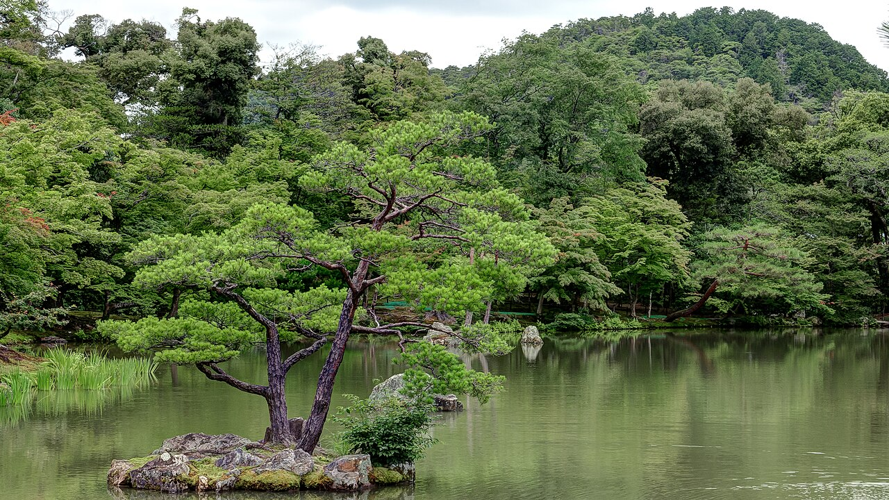
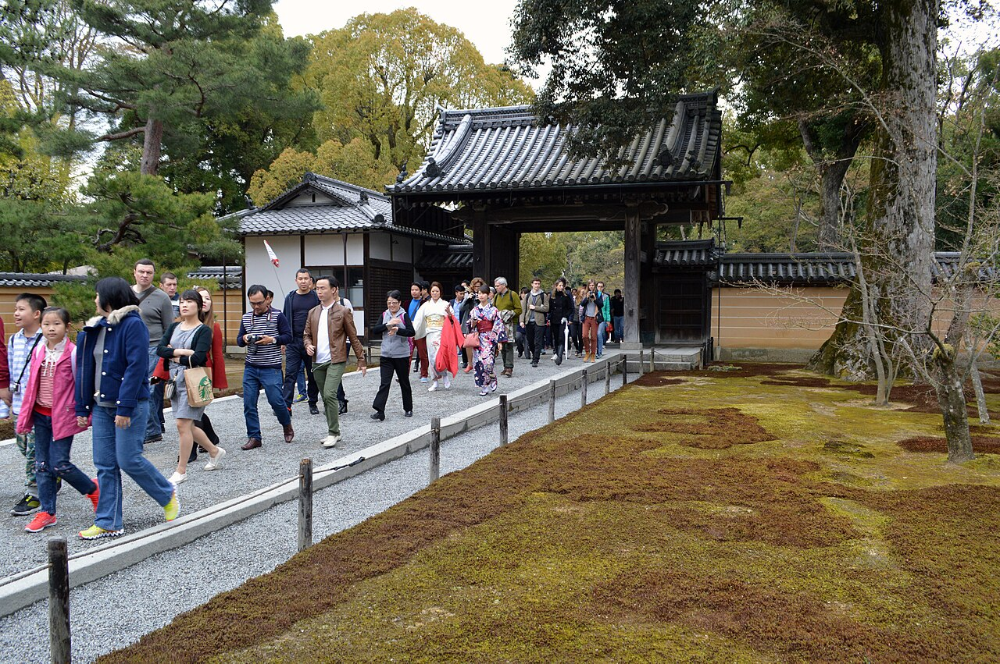

Kinkaku-ji is one of Kyoto’s best-known silhouettes, though the name visitors use is not its formal one. The temple’s official history explains that the Golden Pavilion, or Kinkaku, lends the place its popular name; this branch temple of Shokoku-ji is officially Rokuon-ji. Even the name holds a small story beneath the shine.
The reflection is only the beginning
Beside the garden pond, the pavilion’s reflection changes with the sky, the season, and the place you stand. According to the temple’s official history page, the site is associated with Ashikaga Yoshimitsu and was designated a UNESCO World Heritage Site in 1994. The building’s religious purpose is part of its story too: the pavilion houses sacred Buddhist relics.
The garden asks for a slower kind of looking—the water, the carefully placed stones, the trees that reveal and hide the gold as you move. One photograph can hold the pavilion, but not the small shift in light that made you stop.

Give the journey a little room
The temple’s official access page lists the address as 1 Kinkakuji-cho, Kita-ku, Kyoto 603-8361. It points visitors to the Kinkakuji-michi city-bus stop and currently lists visiting hours as 9:00 a.m. to 5:00 p.m. The temple notes that hours may change, so check once more before setting out; the route through Kyoto can be part of the day too.
Kinkaku-ji is in northern Kyoto. When the map makes two places look close, a live route can tell a different story. Leave a little time for bus traffic, the queue, and the full garden path rather than carrying the day like a tight schedule.
A quiet, considerate visit
Kinkaku-ji is both a major visitor attraction and a religious temple. Follow signs and staff guidance, keep pathways clear, and be mindful of the people around you when stopping for a photo. Respect any restrictions posted on site; they are more reliable than assumptions based on photos or advice from an old guide.
The pond reflection is a popular photograph, so there may be others waiting for the same view. Take a moment without a screen, then leave space for the next person. On a bright day the gold catches the eye; under cloud, the quieter tones can be just as lovely.

Official visitor information
Verify current hours and transit details directly with the temple and local transport information.
Recommended apps for the best trip
These independent services are not Met partners. For temple hours and the final bus, check the official access page and current local transit information.
-
Google Maps
Check directions around Kyoto; verify the final bus with local transit information.
-
12Go Asia
Compare longer regional routes when available; it is not for local Kyoto buses.
-
Airbnb
Compare Kyoto stays and check how each address connects to northern Kyoto.
-
Hostelworld
Compare hostel stays and check the route to Kinkaku-ji before booking.
Met
save your name and the memory in the “Kinkaku-ji” Guest Book with a handwritten-style note or photo, and connect with other great travelers along the path.